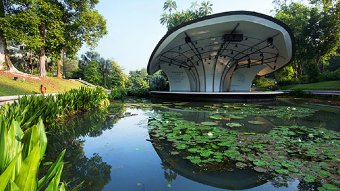

Get to know Singapore's national flower, Vanda Miss Joaquim, a little better here at Singapore's very own National Orchird Garden!

Have a fairlytale-like journey to the Plant House! Look closely for the arrows carved onto the bricks of
the brick path to catch a glimpse of the acts of defiance from the POWs of WWII
Journey down Miss Joaquim Grove where you can get to see the bandstand where military bands used to perform.
If you are lucky, you may catch the Singpaore Symphony Orchestra performing at Shaw Symphony Theatre at Symphony Lake

Interested in Singapore's past as a British colony? Visit Historical Cites , such as Ridley Hall, EJH Corner House and Burkill Hall.
For more info on these places, click on the images here.
Ridley Hall